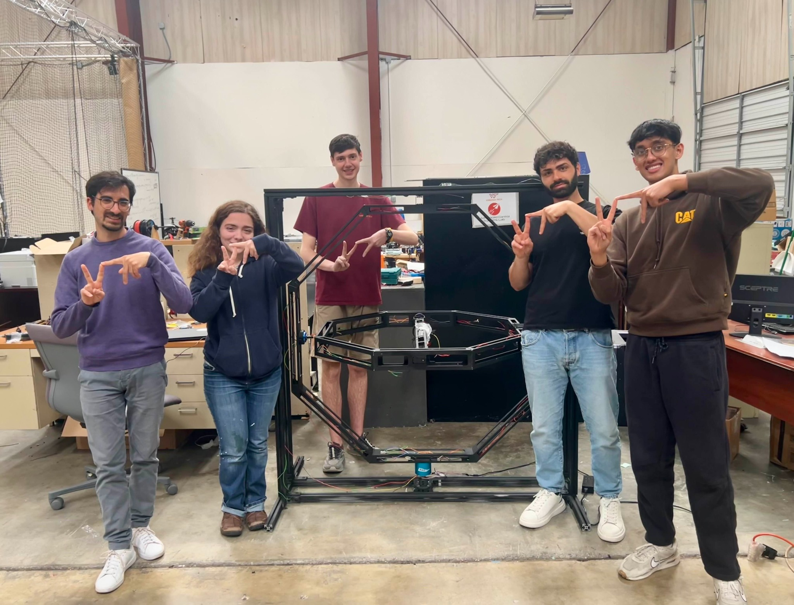
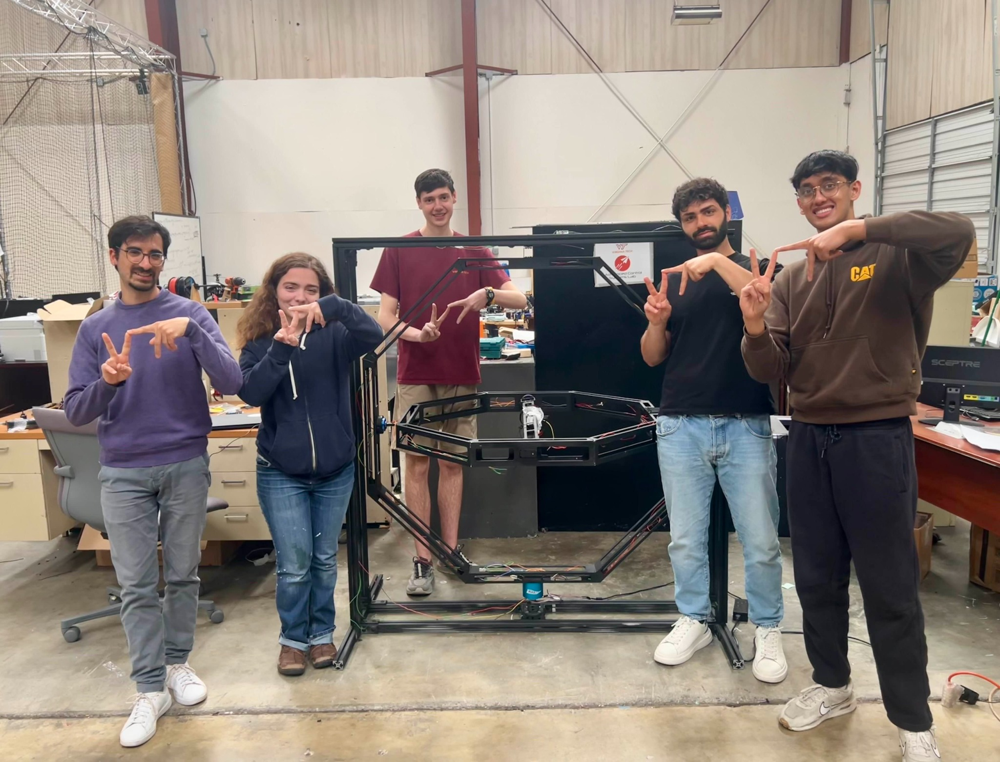

NAVAIR Fellowship – 3‑DOF Thrust Stand
Naval Air Systems Command • Fall 2024 – Spring 2025
As part of the NAVAIR Fellowship at Virginia Tech, I worked on a three‑degree‑of‑freedom thrust stand used to develop and test control algorithms for small unmanned aerial vehicles. The project combined mechanical renovation, software integration and control theory.
Project Overview
Our initial focus was on understanding UAV flight dynamics and control. Under the guidance of Dr. L’Afflitto we studied rigid body dynamics, Euler equations and PID control. Simultaneously, we evaluated an existing thrust stand and discovered that its high mass caused yaw‑axis motor failures due to excessive inertia. Through torque testing and CAD modelling, we redesigned the structure to reduce weight and improve responsiveness.
Key Contributions
- Renovated and recalibrated a 3‑DOF thrust stand, reducing its mass and moment of inertia. Implemented new bearings and structural supports based on finite element analysis.
- Set up ROS2 and the Dynamixel SDK on an Odroid single‑board computer; created a workspace to build and run the ACSL flight stack.
- Wrote C++ nodes to command Dynamixel servo motors and developed a startup routine that zeroes all axes on power‑on. Enabled simultaneous control of roll, pitch and yaw.
- Explored genetic algorithms in MATLAB for automatic PID tuning and designed a performance index node to evaluate controller quality.
- Documented assembly, wiring, data logging and troubleshooting in a comprehensive setup manual to support future teams.
Skills & Tools
- Mechanical design and CAD (SolidWorks, Onshape)
- ROS2 & C++ node development
- Embedded Linux (Odroid) & Dynamixel SDK
- Genetic algorithms and MATLAB scripting
- Technical documentation and teamwork
 
